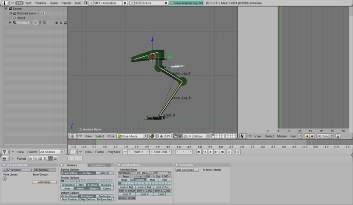
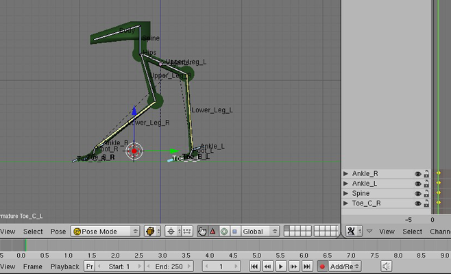
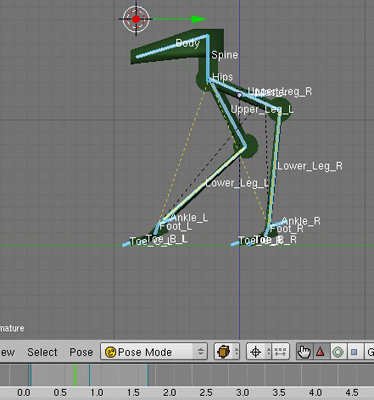
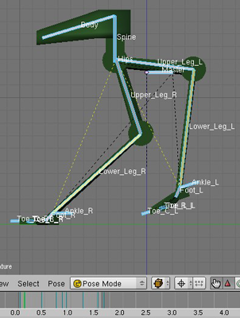
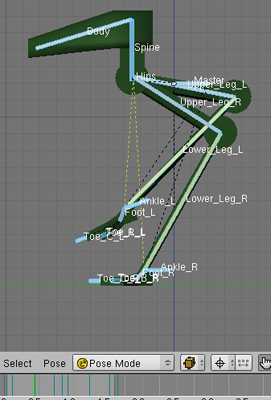
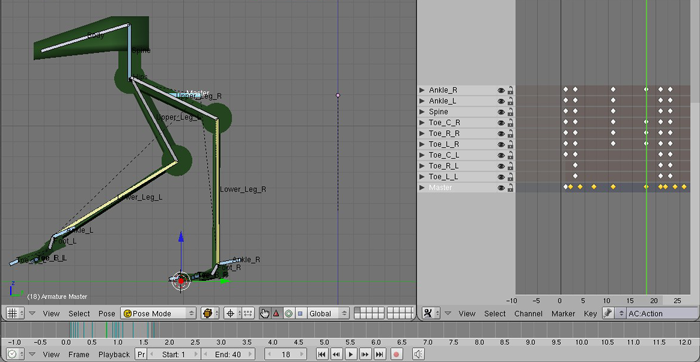
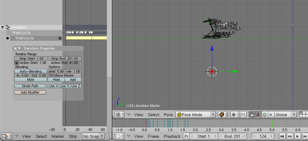

Blender Beginner for Beginner Tutorial: Mech Model Part 4: Animating
24th June 2010 - Blender 2.47
Once the mech model is rigged as in the previous tutorial, the bones can be used to help animate the mech. Here we will create a simple walk cycle for the rigged mech. This is the last tutorial in this series on using Blender to create a mech model. The final result of this tutorial, and thus the entire series, is shown in the video below.
- Mech Model Part 1: Modelling
- Mech Model Part 2: Texturing
- Mech Model Part 3: Rigging
- Mech Model Part 4: Animating
-
Firstly, Blender needs to be set up with windows appropriate to
animation. Go to the 1-Animation screen using the dropdown box at the
top of the Blender windows. It will bring up windows organised like the
below image, with the exception that the right hand window is an Ipo
Curve Editor. Change it to an Action Editor window so it matches the
image below. The open windows are now (from left to right, top to
bottom):
- Outliner - this shows all the objects in the scene. In this scene there are just the mech and armature, but it can be useful for navigating around larger scenes.
- 3D View - this is the same window as used for modelling and should be familiar by now.
- Action Editor - this shows the keyframes for the bones - a diamond represents a keyframe on the appropriate bone at that frame. A keyframe on a bone at a frame means that the bone will be in that position and orientation at that frame when replayed in an animation.
- Timeline - this shows the timeline of the animation. The Start value is the first frame of the animation and the End value is the last frame - the number to the right of that is the current frame number. Above those numbers is a graphical display of the same information - the lighter part is in between the Start and End frames, the green line is the current frame, and the other blue lines are those frames with keyframes.
- Panels - this is the same as used for modelling and should be familiar by now.
 -
When animating the walk cycle initially the mech won’t actually go
forward, it will just walk on the spot. The mech body should stay is the
same position in the X & Y axes - although it is ok for it to move up or
down (the Z axis). Imagine a camera filming the mech walking from the
side while it moves at the same speed as the mech. Set the frame counter
on the Timeline to frame 1, this will be the contact pose - the point
where the leading leg first touches the ground. Position the front foot
as if it is just touching the ground on a forward step and position the
back leg as if it is just about to move off the ground to start moving
forward (as shown below). Posing the mech should automatically store the
pose as keyframes on the timeline (as record was pressed in the earlier
step).
 -
The mid-point of the walk cycle is the mirror reverse of the contact
pose. Select all the bones (A-KEY) and go to the 3D View menu option
Pose -\> Copy Current Pose and move to frame 21, then Pose -\> Paste
Flipped Pose. The end of the cycle is the same as the start so go to
frame 41 and click Pose-\> Paste Pose. Also set the length of the
animation to 41 frames (by setting the End value on the Timeline to 41).
Press play on the Timeline window and let the animation play a few
times. The start of a walk is there, but it definitely needs more work.
We just add more posed frames until Blender can correctly interpret the
cycle better.
 -
To improve the walk add a few more poses. On frame 3 (with a flipped
version on frame 23) pose the point at wich the front leg takes the
weight of the mech and the rear leg lifts off the ground (see left image
below). On frame 11 (with a flipped version on frame 31) pose the
highest point on the rear leg’s path to becoming the front leg (see
right image below). With these extra points the walk looks much better.
Add in more poses as required until happy with the cycle. Some helpful
commands are ALT-G and ALT-R: to remove translations or rotations (this
may require a manual keyframe afterwards). Use the I-KEY to manually set
a keyframe on a bone. It is also possible to move the keyframes around
in the Action Editor window with the G-KEY or delete them with the
X-KEY.
  -
Now to make the mech move. Go to frame 1. Select the master bone and
press I-KEY and select Loc from the provided options. This keyframes the
position of the whole mech at the start. Also place the 3D cursor on the
tip of the front toe on the leading leg where it touches the ground (the
Y-axis). Now move forward through the frames to the point that same toe
is just about to leave the ground (frame 21 for me). As the mech is
walking in place this toe is now far behind the mech. Move the master
bone in the Y axis only (thus moving the entire mech) so that the tip of
the toe is once again on the cursor (the image below shows this pose).
Repeat this step with the current front toe. Once a toe touches the
ground it should not move forward or backward until it leaves the
ground. The cursor marks this unchanging point. Use the master bone to
move the mech such that this constraint holds. This should complete the
walkcycle, although more poses can be added if you like. Rename this
action in Action Editor header, to something like Walkcycle. The
animation is done, let’s produce a short video of the walk.
 -
Turn record off by pressing the record button on the timeline. Make the
left window an NLA editor. This window allows animations to be repeated,
scaled, blended with other actions, and more. It is worth investigating
further, but for now we just want the single walk animation repeated. So
convert the walkcycle into a NLA strip by pressing the C-KEY in the NLA
window. Then press N-KEY to bring up the Transforms panel. Here we can
set the size of the strip. Set the Repeat value to 5. This will make the
mech repeat the walk cycle 5 times. Press Play and the mech will move
very fast! Increase the strip size by setting the Strip End to frame
1. To make the mech start each animation at the point it ended the
previous one, put the name of the Master bone in the OffsBone box in the
properties.
This is the point the blender file stops, but if you want to know how to record an animation like the video above, carry on. Position a camera to view the animation and some lights so you can see it. You can use the camera view (NUMPAD10) to see what the animation will look like when you play it. When happy, go to the Scene panel (F10), and chose an appropriate format (the above video was Quicktime) and press Anim. Blender will slowly render all the frames and you can play them back with the Play button. Not the best render, but this is a beginner tutorial (and I’m a beginner too) - we’ll learn how to do better later.
You can download the blend file here.

Mech
Walkcycle Blender Model by
Charles
Cordingley is licensed under a
Creative
Commons Attribution 2.0 UK: England & Wales License.